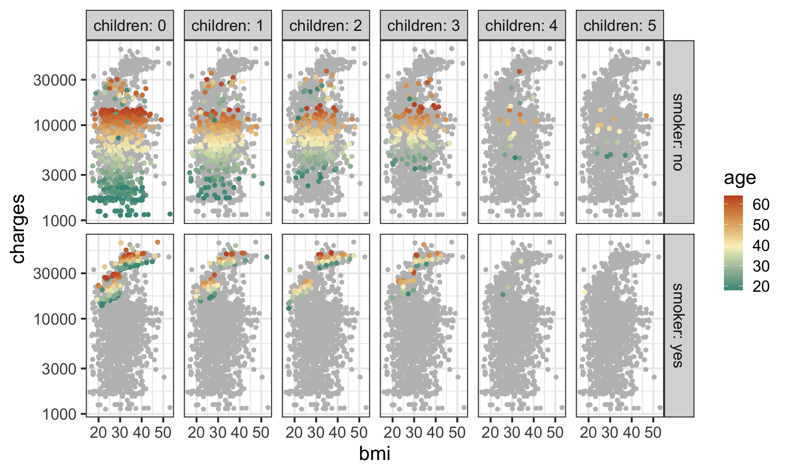
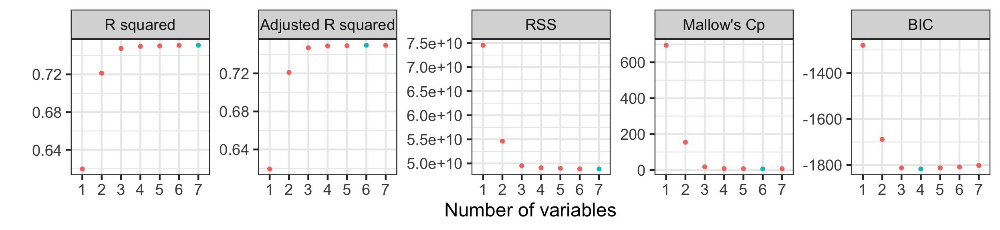
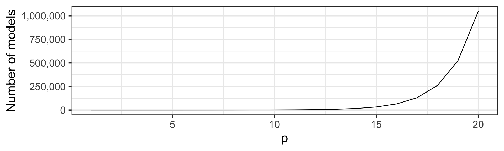

# A tibble: 1,338 × 7
age sex bmi children smoker region charges
<dbl> <chr> <dbl> <dbl> <chr> <chr> <dbl>
1 19 female 27.9 0 yes southwest 16885.
2 18 male 33.8 1 no southeast 1726.
3 28 male 33 3 no southeast 4449.
4 33 male 22.7 0 no northwest 21984.
5 32 male 28.9 0 no northwest 3867.
6 31 female 25.7 0 no southeast 3757.
7 46 female 33.4 1 no southeast 8241.
8 37 female 27.7 3 no northwest 7282.
9 37 male 29.8 2 no northeast 6406.
10 60 female 25.8 0 no northwest 28923.
# … with 1,328 more rows
ETC3250/5250
Introduction to Machine Learning
Variable selection
Lecturer: Emi Tanaka
Department of Econometrics and Business Statistics
Predicting the insurance cost
- This data is sourced from Medical Cost Personal Datasets
Pair plots
- This plot shows the marginal and pairwise joint distribution of variables.
age,bmiandchildrenare significantly correlated withcharges.bmiis significantly correlated withage.smokerappears to make significant difference in the charge.regionandsexdon’t make seem to be significantly different in distribution forcharges.chargesis right skewed.
Investigating further
Code
ggplot(insurance, aes(bmi, charges, color = age)) +
geom_point(data = ~select(.x, -c(smoker, children)),
color = "grey", size = 1.5) +
geom_point(size = 1.5) +
colorspace::scale_color_continuous_divergingx(mid = mean(insurance$age)) +
facet_grid(smoker ~ children, labeller = label_both) +
scale_y_log10()
- A pair plot only show certain aspects of data.
- You can’t see higher order interaction effects say.
- The data does not contain many individuals with higher number of
children. - The
chargesare higher forsmokers. - The higher
aged individuals appears to have highercharges. - There seems to be a jump in
chargesfor smokers withbmihigher than 30.
Variable selection
Initial proposed regression model
\begin{align*}\color{#027EB6}{\mathcal{M}_1}&: \log_{10}(\texttt{charges}_i) = \beta_0 + \beta_1\texttt{bmi}_{i} + \beta_2\texttt{age}_{i} + \beta_3\texttt{bmi}_{i} \times \texttt{age}_{i}\\& \qquad\qquad + \beta_4\texttt{children}_i + \beta_{52}\underline{\texttt{smoker}}_{i2} + e_i\end{align*}
# A tibble: 6 × 5
term estimate std.error statistic p.value
<chr> <dbl> <dbl> <dbl> <dbl>
1 (Intercept) 2.93 0.0795 36.9 5.61e-206
2 bmi 0.00782 0.00255 3.06 2.24e- 3
3 age 0.0177 0.00196 9.01 7.08e- 19
4 children 0.0440 0.00443 9.94 1.62e- 22
5 smokeryes 0.670 0.0132 50.7 5.33e-313
6 bmi:age -0.0000835 0.0000623 -1.34 1.80e- 1- What is the
p.valuehere?
Review: t-test for regression coefficients
H_0: \beta_j = 0\qquad\text{vs}\qquad H_1: \beta_j\neq 0
Assume that \boldsymbol{e} \sim N(\boldsymbol{0}, \sigma^2\mathbf{I}_n).
The slope
estimates is given as \hat{\boldsymbol{\beta}} = (\mathbf{X}^\top\mathbf{X})^{-1}\mathbf{X}^\top\boldsymbol{y}.The
std.erroris the square root of the diagonal elements of var(\hat{\boldsymbol{\beta}}) = \sigma^2(\mathbf{X}^\top\mathbf{X})^{-1}.The test
statisticfor the t-test is given as: t^* = \frac{\hat{\beta}_j}{SE(\hat{\beta}_j)} \sim t_{n - p_1 - 1}\text{ under } H_0.- where p_1 is the number of coefficients, excluding intercept, in \mathcal{M}_1.
The t-test
p.valueis then give as P(|t_{n - p_1 - 1}| \geq |t^*|).
Proposed multiple linear regression models
\begin{align*}\color{#027EB6}{\mathcal{M}_1}&: \log_{10}(\texttt{charges}_i) = \beta_0 + \beta_1\texttt{bmi}_{i} + \beta_2\texttt{age}_{i} + \beta_3\texttt{bmi}_{i} \times \texttt{age}_{i}\\& \qquad\qquad + \beta_4\texttt{children}_i + \beta_{52}\underline{\texttt{smoker}}_{i2} + e_i\\ \color{#D93F00}{\mathcal{M}_2}&: \log_{10}(\texttt{charges}_i) = \beta_0 + \beta_1\texttt{bmi}_{i} + \beta_2\texttt{age}_{i} + \beta_3\texttt{bmi}_{i} \times \texttt{age}_{i}\\& \qquad + \beta_4\texttt{children}_i + \beta_{52}\underline{\texttt{smoker}}_{i2} + \color{#D93F00}{\beta_{62}\underline{\texttt{bmi30}}_{i2}}\\&\qquad \color{#D93F00}{+ \beta_{72} \underline{\texttt{smoker}}_{i2}\times \underline{\texttt{bmi30}}_{i2}} + e_i\end{align*}
- where
bmi30is a feature engineered binary variable wherebmi> 30 - \color{#027EB6}{\mathcal{M}_1} is a nested model of \color{#D93F00}{\mathcal{M}_2} (where \beta_{62} = \beta_{72} = 0)
Comparing nested regression models
Analysis of Variance Table
Model 1: log10(charges) ~ bmi + age + bmi:age + children + smoker
Model 2: log10(charges) ~ bmi + age + bmi:age + children + smoker + bmi30 +
smoker:bmi30
Res.Df RSS Df Sum of Sq F Pr(>F)
1 1332 50.645
2 1330 46.332 2 4.3126 61.898 < 2.2e-16 ***
---
Signif. codes: 0 '***' 0.001 '**' 0.01 '*' 0.05 '.' 0.1 ' ' 1Comparing nested models using the F-test
\color{#027EB6}{H_0}: \beta_{62} = \beta_{72} = 0\qquad\text{ vs }\qquad\color{#D93F00}{H_1}: \beta_{62} \neq 0 \text{ and/or }\beta_{72} \neq 0
The F-statistic is given as: F^* = \frac{(\color{#027EB6}{RSS_{\mathcal{M}_1}}-\color{#D93F00}{RSS_{\mathcal{M}_2}})/(\color{#D93F00}{p_{2}}-\color{#027EB6}{p_{1}})}{\color{#D93F00}{RSS_{\mathcal{M}_2}}/(n-\color{#D93F00}{p_{2}}-1)} \tilde \cal{F}_{\color{#D93F00}{p_{2}}-\color{#027EB6}{p_{1}},n-\color{#D93F00}{p_{2}}-1}
- where p_2 is the number of coefficients (minus one) in \mathcal{M}_2.
The p-value for the F-test is given as P(F_{p_2 - p_1, n - p_2 - 1} > F^*).
Selecting predictors
- What predictors do we use?
- For prediction, ideally those that improve prediction of new records.
- Why not use all predictors?
- If you add predictors that are irrelevant, you add noise to the parameter estimation.
- This may affect the predictive accuracy of new records.
- We discuss two approaches:
- exhaustive search and
- subset selection algorithms.
Exhaustive search
Exhaustive search
- In an exhaustive search, we fit models with all possible combinations of the predictors.
- For p predictors these include:
- all p models with one predictor,
- all p\choose 2 models with two predictors, and so on, …
- a model with p predictors.
- There are a total of p + {p \choose 2} + \dots + 1 = \sum_{k=1}^p {p \choose k} = \color{#006DAE}{2^p - 1} models to consider.
- We can then select the model with the best metrics.
Exhaustive search with leaps package
- The
leapspackage can do an exhaustive search for regression models.
- The best model for a given number of variable is efficiently found using the leaps and bound approach (out of the scope for this unit).
Caveats in automated searches
- Selection algorithms can treat variables without structure so it can result in undesirable searches.
- Categorical variables are often converted to dummy variables, but no group selection occurs. E.g. the variable
regionhas the levelsnortheast,northwest,southeast, andsouthwest, but the automated search may selectsoutheastonly, instead of the wholeregionvariable. - Similarly, main effects may be omitted when the interaction effect is included.
- For polynomial effects, the lower order effects may be excluded even if the higher order effects are included.
Best models per number of variables
age sexmale bmi children smokeryes regionnorthwest regionsoutheast regionsouthwest
1 ( 1 ) " " " " " " " " "*" " " " " " "
2 ( 1 ) "*" " " " " " " "*" " " " " " "
3 ( 1 ) "*" " " "*" " " "*" " " " " " "
4 ( 1 ) "*" " " "*" "*" "*" " " " " " "
5 ( 1 ) "*" " " "*" "*" "*" " " "*" " "
6 ( 1 ) "*" " " "*" "*" "*" " " "*" "*"
7 ( 1 ) "*" " " "*" "*" "*" "*" "*" "*" - The best model with one variable is
log10(charge) ~ smoker. - The best model with two variables is
log10(charge) ~ age + smoker. - The best model with three variables is
log10(charge) ~ age + smoker + bmi.
Comparing models with different number of variables
- Comparison between models with the same number of variables is straight forward (e.g. RSS, R^2, or t-test).
- Comparison between models across different number of variables is less so due to the different model complexity.
- We could compare nested models (which have different number of variables) using the F-test, but this doesn’t work when models are not nested.
- We need model metrics that allow comparison for different number of variables.
Model metrics
Visualising model metrics
Code
tibble(nvar = factor(1:length(resout$rsq)),
`R squared` = resout$rsq,
`Adjusted R squared` = resout$adjr2,
`RSS` = resout$rss,
`Mallow's Cp` = resout$cp, # proportional to AIC
`BIC` = resout$bic) %>%
pivot_longer(-nvar, names_to = "metric") %>%
mutate(metric = fct_inorder(metric),
sign = ifelse(metric %in% c("R squared", "Adjusted R squared"), -1, 1),
optvalue = value * sign) %>%
group_by(metric) %>%
mutate(optimal = optvalue == min(optvalue)) %>%
ggplot(aes(nvar, value)) +
geom_point(aes(color = optimal)) +
facet_wrap(~metric, scale = "free_y", nrow = 1) +
labs(x = "Number of variables", y = "") +
guides(color = "none")
- Adjusted R^2 and Mallow’s C_p suggests the best model with six variables, while BIC is suggesting best model with four variables.
- We don’t use R^2 and RSS to select models for different number of variables (why?)
R^2 and adjusted R^2
For model \mathcal{M} with p_\mathcal{M} predictors:
R^2(\mathcal{M}) = 1 - \frac{RSS(\mathcal{M})}{TSS}\quad \text{and} \quad R^2_a(\mathcal{M}) = 1 - \frac{RSS(\mathcal{M})/(n-p_\mathcal{M})}{TSS/(n - 1)}
- Would the R^2 (or RSS) be a good accuracy measure?
- No! As mentioned last week, the R^2 always increases with p so it will just chose the model with all p predictors.
- Instead we can use the adjusted R^2.
Other goodness of fit criteria
- Adjusted R^2 is a function of RSS = \sum_{i=1}^n\hat{e}_i^2 but why not use \sum_{i=1}^n|\hat{e}_i| or some other loss function instead?
- We can construct a criteria with the structure \sum_{i=1}^n\rho(\hat{e}_i) + \lambda(p_\mathcal{M}, n) where \rho(z) is a non-negative loss function (e.g. z^2) and \lambda is a penalty term for the complexity of the model.
Akaike information criterion
scroll
- The Akaike information criterion (AIC) is defined as
\text{AIC}(\mathcal{M}) = -2~\text{log-likelihood} + 2p_\mathcal{M}.
- If e_i \sim NID(0, \sigma^2) then
Mathematical derivation
Recall y_i \sim N(\sum_{j = 0}^px_{ij}\beta_j, \sigma^2).
Then
\begin{align*} \text{AIC}(\mathcal{M}) &= -2~\text{log-likelihood} + 2p_\mathcal{M} \\ & = -2 \sum_{i=1}^n \ln \left(\frac{1}{\sigma \sqrt{2\pi}} \exp\left(-\frac{1}{2\sigma^2} \left(y_i - \sum_{j=1}^p x_{ij}\beta_j\right)^2\right) \right) + 2p_\mathcal{M} \\ &= n\ln (2\pi) + n \ln (\sigma^2) + \frac{1}{\sigma^2} \sum_{i=1}^n \left(y_i - \sum_{j=1}^p x_{ij}\beta_j\right)^2 + 2p_\mathcal{M}. \\ \end{align*}
We use the maximum likelihood estimators for \beta_j and \sigma then RSS = \sum_{i=1}^n \left(y_i - \sum_{j=1}^p x_{ij}\hat{\beta}_j\right)^2 and \hat{\sigma}^2 = RSS / n.
\hat{\text{AIC}}(\mathcal{M}) = n\log\left(\frac{RSS(\mathcal{M})}{n}\right) + 2 p_\mathcal{M} + \text{constant}.
Mallows’s C_p
- A reasonable estimate of the test MSE is measured by Mallows’s C_p as: \hat{C}_p = \frac{1}{n} (RSS+2p_\mathcal{M}\hat{\sigma}^2) where \hat{\sigma}^2 is an estimate of the variance of the error e in the full model containing all p predictors.
- An alternative (normalised) form is given as
\hat{C}_p = \frac{RSS}{\hat{\sigma}^2} - n + 2(p_\mathcal{M} + 1).
Mallows’s C_p and AIC
- The two forms of Mallows’s C_p do not give equivalent values but the same model will be selected based on the smallest \hat{C}_p.
- If \sigma is known, AIC can also be written as
AIC = \frac{1}{\sigma^2}SSE + 2p_\mathcal{M} + \text{constant}.
- If \sigma is known, then C_p = AIC + \text{constant} so AIC is often considered equivalent to C_p for linear regression models with Normally distributed errors.
Bayesian information criterion
AIC and C_p have a tendency to include too many variables.
Bayesian information criterion (BIC) is defined as \text{BIC}(\mathcal{M}) = -2~\text{log-likelihood} + \log(n)\cdot p_\mathcal{M}.
BIC penalises the inclusion of more variables.
BIC is derived to find the “true” model amongst the candidate models.
Computing AIC and BIC in R
- The computation of AIC (or Mallows’s C_p) and BIC can differ by a constant across different packages.
- Therefore take caution comparing these metrics across different packages! They are often not comparable.
Subset selection algorithms
Too many models to consider
- How many (additive) models to consider when p = 20?
2^{20} = 1,048,576 \text{ models}
- It quickly becomes infeasible to consider all models.

Automated subset selection algorithms
- Automated subset selection algorithms “walk along” a “path”:
- Choose a model to start with (null or full model).
- Test to see if there is an advantage to add/drop variables.
- Repeat adding/dropping variables until there is no change in the model.
- This search strategy requires us to consider only a quadratic order of the number of models, but are there is no guarantee to result in the optimal solution.
- These algorithms include forward selection, backward elimination and stepwise regression.
Forward selection
- Start with the model with no variables (the null model).
- For each variable, investigate the advantage of adding into the current model.
- Add the most informative or significant variable, unless this variable is not supplying significant information about the response.
- Repeat step 2-3 until none of the non-included variables are important.
Backward elimination
- Start with the model with all variables (the full model).
- For each variable, investigate the advantage of removing from the current model.
- Remove the least informative variable, unless this variable is supplying significant information about the response.
- Repeat 2-3 until all variables are important.
Stepwise regression
- Start with either the null or full model.
- For each variable, investigate the advantage of removing from the current model.
- Remove the least informative variable, unless this variable is supplying significant information about the response.
- For each variable, investigate the advantage of adding into the current model.
- Add the most informative or significant variable, unless this variable is not supplying significant information about the response.
- Repeat step 2-5 until there is no change in the model.
Variable selection with R
scroll
null <- lm(log10(charges) ~ 1, data = insurance)
full <- lm(log10(charges) ~ ., data = insurance)
scope <- list(lower = formula(null),
upper = formula(full))
# forward selection with AIC
step(null, scope = scope, direction = "forward", k = 2)Start: AIC=-2455.38
log10(charges) ~ 1
Df Sum of Sq RSS AIC
+ smoker 1 94.435 118.79 -3236.1
+ age 1 59.405 153.81 -2890.3
+ children 1 5.550 207.67 -2488.7
+ bmi 1 3.753 209.47 -2477.1
<none> 213.22 -2455.4
+ region 3 0.670 212.55 -2453.6
+ sex 1 0.007 213.21 -2453.4
Step: AIC=-3236.12
log10(charges) ~ smoker
Df Sum of Sq RSS AIC
+ age 1 63.252 55.534 -4251.4
+ children 1 5.205 113.581 -3294.1
+ bmi 1 3.613 115.173 -3275.4
+ sex 1 0.436 118.350 -3239.0
<none> 118.786 -3236.1
+ region 3 0.467 118.318 -3235.4
Step: AIC=-4251.43
log10(charges) ~ smoker + age
Df Sum of Sq RSS AIC
+ children 1 3.7780 51.756 -4343.7
+ bmi 1 1.0753 54.459 -4275.6
+ region 3 0.4363 55.098 -4256.0
+ sex 1 0.2590 55.275 -4255.7
<none> 55.534 -4251.4
Step: AIC=-4343.7
log10(charges) ~ smoker + age + children
Df Sum of Sq RSS AIC
+ bmi 1 1.04289 50.713 -4368.9
+ region 3 0.47102 51.285 -4349.9
+ sex 1 0.29478 51.461 -4349.3
<none> 51.756 -4343.7
Step: AIC=-4368.94
log10(charges) ~ smoker + age + children + bmi
Df Sum of Sq RSS AIC
+ region 3 0.87917 49.834 -4386.3
+ sex 1 0.35181 50.361 -4376.2
<none> 50.713 -4368.9
Step: AIC=-4386.33
log10(charges) ~ smoker + age + children + bmi + region
Df Sum of Sq RSS AIC
+ sex 1 0.35563 49.478 -4393.9
<none> 49.834 -4386.3
Step: AIC=-4393.92
log10(charges) ~ smoker + age + children + bmi + region + sex
Call:
lm(formula = log10(charges) ~ smoker + age + children + bmi +
region + sex, data = insurance)
Coefficients:
(Intercept) smokeryes age children
3.053333 0.675034 0.015019 0.044236
bmi regionnorthwest regionsoutheast regionsouthwest
0.005809 -0.027703 -0.068270 -0.056003
sexmale
-0.032753 # backward selection with BIC
step(full, scope = scope, direction = "backward", k = log(nrow(insurance)))Start: AIC=-4347.13
log10(charges) ~ age + sex + bmi + children + smoker + region
Df Sum of Sq RSS AIC
<none> 49.478 -4347.1
- region 3 0.883 50.361 -4345.1
- sex 1 0.356 49.834 -4344.7
- bmi 1 1.516 50.994 -4313.9
- children 1 3.787 53.265 -4255.7
- age 1 58.546 108.024 -3309.6
- smoker 1 98.101 147.580 -2892.1
Call:
lm(formula = log10(charges) ~ age + sex + bmi + children + smoker +
region, data = insurance)
Coefficients:
(Intercept) age sexmale bmi
3.053333 0.015019 -0.032753 0.005809
children smokeryes regionnorthwest regionsoutheast
0.044236 0.675034 -0.027703 -0.068270
regionsouthwest
-0.056003 # stepwise regression with AIC starting with full model
step(full, scope = scope, direction = "both", k = 2)Start: AIC=-4393.92
log10(charges) ~ age + sex + bmi + children + smoker + region
Df Sum of Sq RSS AIC
<none> 49.478 -4393.9
- sex 1 0.356 49.834 -4386.3
- region 3 0.883 50.361 -4376.2
- bmi 1 1.516 50.994 -4355.5
- children 1 3.787 53.265 -4297.2
- age 1 58.546 108.024 -3351.2
- smoker 1 98.101 147.580 -2933.7
Call:
lm(formula = log10(charges) ~ age + sex + bmi + children + smoker +
region, data = insurance)
Coefficients:
(Intercept) age sexmale bmi
3.053333 0.015019 -0.032753 0.005809
children smokeryes regionnorthwest regionsoutheast
0.044236 0.675034 -0.027703 -0.068270
regionsouthwest
-0.056003 Drawbacks of these methods
- The main issue is that these subset selection procedures potentially identify models that are only locally optimal so there is guarantee to provide optimal solution.
- These methods might disagree with each other and select different models.
- Backwards elimination methods are not feasible when p > n.
Takeaways
- Multiple linear regression is an intuitive and useful tool in prediction.
- When selecting a model, there are many aspects such as non-linearity and interactions between predictors that must be considered.
- Model selection algorithms can help, but they also have some limitations.

ETC3250/5250 Week 2